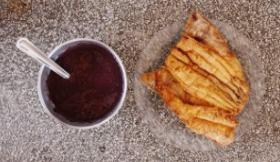
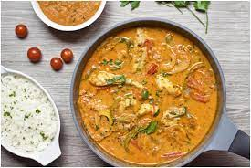
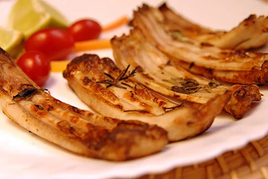
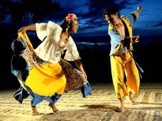
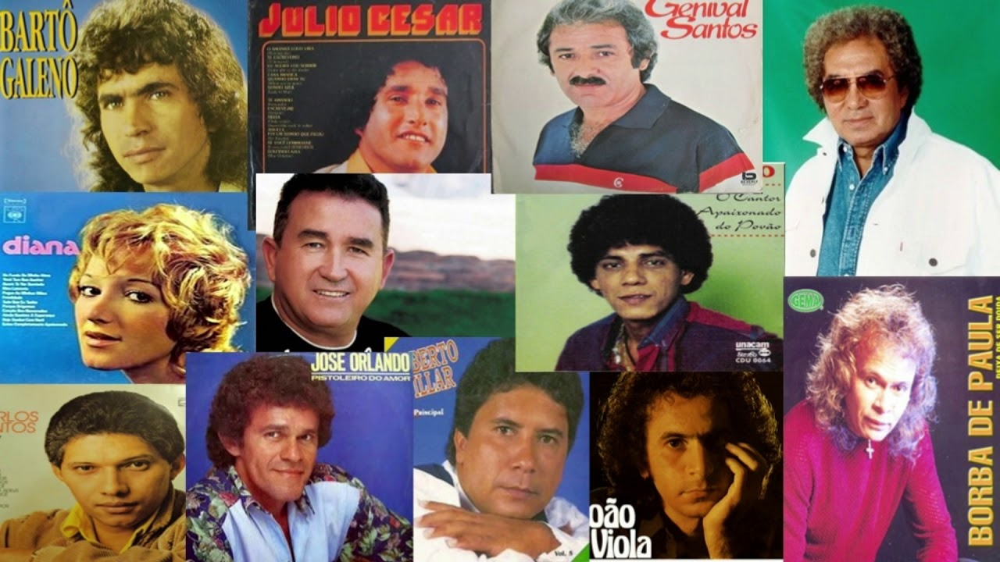
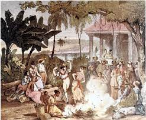
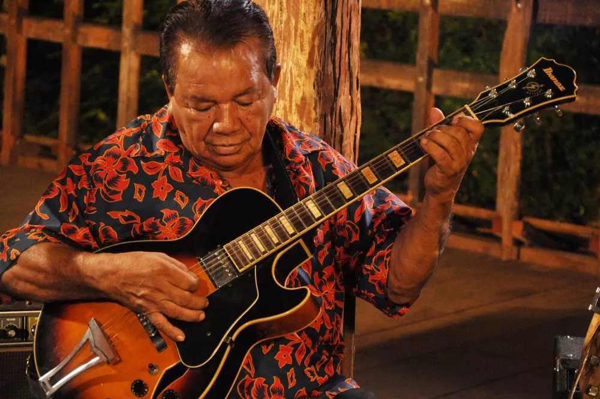
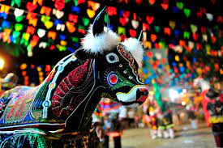

Dados Gerais (IBGE - 2019)
- Área territorial: 3.853.575,6 km², o que resulta em, aproximadamente, 45% do território brasileiro.
- População: 18.430.980 habitantes
- Densidade demográfica: 4,73 habitantes por km²
- Índice de Desenvolvimento Humano: 0,683
- Produto Interno Bruto (em reais): R$ 201.511.748.000,00
Mascote
Escolhemos a harpia brasileira por mostrar toda a imponência da região Norte e da floresta amazônica. Seu tamanho gigantesco e suas garras afiadas botam muito medo em quem a encontra nas matas.
Nome da Comunidade
O nome da comunidade foi pensado com base na língua do grupo indígena com maior população da região norte, os Ticuna, a palavra "Waiíma" significa terra na linguagem deles, escolhemos essa palavra por representar a base da vida.
Bandeira
A bandeira da nossa comunidade foi pensada nas coisas mais valiosas do Brasil, principalmente da região Norte do país, o verde representa as grandes matas da maior floresta do mundo, o azul mais fraco representa o grande rio amazonas, maior rio do Brasil, o mais forte o céu, que é muito importante para os indígenas, e o Sol é a luz, a esperança.

Comidas Típicas
As comidas da região Norte do Brasil são muito diversificadas e influenciadas pelas culturas indígena, africana e portuguesa. A região é rica em ingredientes como peixes de água doce, frutas exóticas, mandioca, castanhas, e diversos tipos de pimentas. Muitas das comidas típicas da região norte são preparadas com ingredientes locais, como o tucupi, um líquido extraído da mandioca, que é um ingrediente essencial em vários pratos.
Abaixo irá ter algumas comidas típicas da região.
1- Açaí: Um fruto roxo escuro, rico em nutrientes, que é consumido principalmente como uma tigela de creme, geralmente acompanhado por granola e frutas. Diferente dos outros lugares do país, eles comem o açaí de uma forma diferente, sem açúcar, deixando o mais natural possível, e também utilizam vários acompanhamentos diferentes, como farinha de tapioca, peixe e camarão.
2- Moqueca de Gurijuba: Comida mais consumida do Amapá, vencedor do festival Brasil Sabor, realizado no Amapá em 2021. Gurijuba é um é um peixe localizado no Norte do Brasil, principalmente no Amapá, entre a foz do rio Araguari e a foz do rio Cunani.
3- Pato no Tucupi: Sendo um clássico da Região Norte, principalmente do Pará, esse prato vai pato, que é assado, junto com o tucupi, um caldo extraído da mandioca brava, ainda no caldo se adiciona algumas ervas. Por ser uma carne considerada exótica e um caldo da mandioca, que na maioria das vezes é venenosa, esse prato precisa ser bem preparado, para que não haja nenhum erro.

4- Costela de Tambaqui: Prato comum da região Norte, esse prato é servido como um petisco, aonde pode adicionar os acompanhamentos, sendo limão ou pimenta. O tambaqui não é um peixe originário só do Norte, porém é encontrado facilmente no rio Amazonas.
Músicas e Danças
A região Norte do Brasil é conhecida por sua riqueza cultural e diversidade de estilos musicais, que refletem a pluralidade étnica e cultural dessa parte do país. A seguir, destacamos alguns dos estilos musicais típicos da região Norte.
1- Carimbó: Originário do Pará, o carimbó é uma dança típica que se caracteriza pelo ritmo acelerado e animado, marcado pelo som dos tambores e das maracas. É comum ver as pessoas dançando em roda ao som do carimbó em festas e celebrações populares.
2- Brega: um estilo musical popular em todo o Brasil, o brega é especialmente forte no Norte do país. Suas letras românticas, muitas vezes tristes, falam sobre amor, saudade e relacionamentos. O brega tem como referências musicais o bolero, a música caipira e o rock dos anos 1950.
3- Lundu: Considerado o ritmo mais antigo do Brasil, o lundu tem origem africana e se difundiu pelo país durante o período colonial. Caracterizado pela mistura de influências indígenas, africanas e portuguesas, o lundu é marcado pelo ritmo lento e cadenciado e pelo uso de instrumentos como o violão, o cavaquinho e a viola.
4- Guitarrada: Estilo musical típico do Pará, a guitarrada mistura ritmos locais com a guitarra elétrica, instrumento que foi introduzido na região nos anos 1960. O som da guitarrada é vibrante e dançante, com influências do carimbó e do merengue.
5- Boi-Bumbá: Tradição cultural do Amazonas, o boi-bumbá é uma festa popular que mistura dança, música e teatro. A festa é uma homenagem ao boi, considerado um animal sagrado na cultura amazônica. A música do boi-bumbá é marcada por tambores, flautas e violas, e as letras falam sobre lendas e histórias da região.
